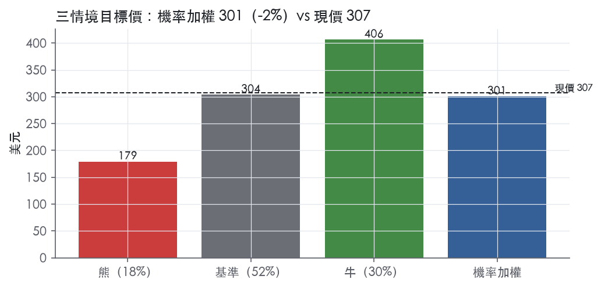
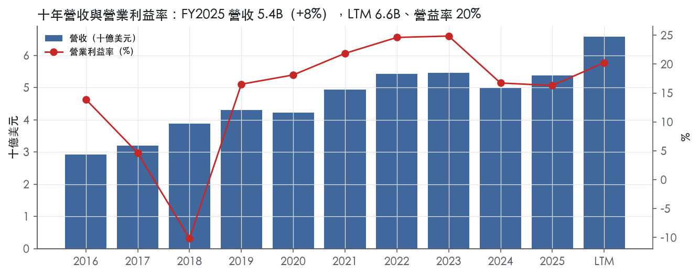
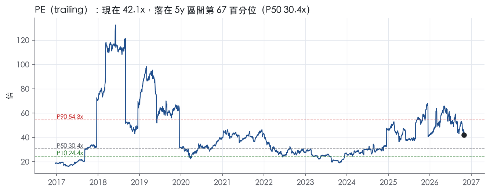
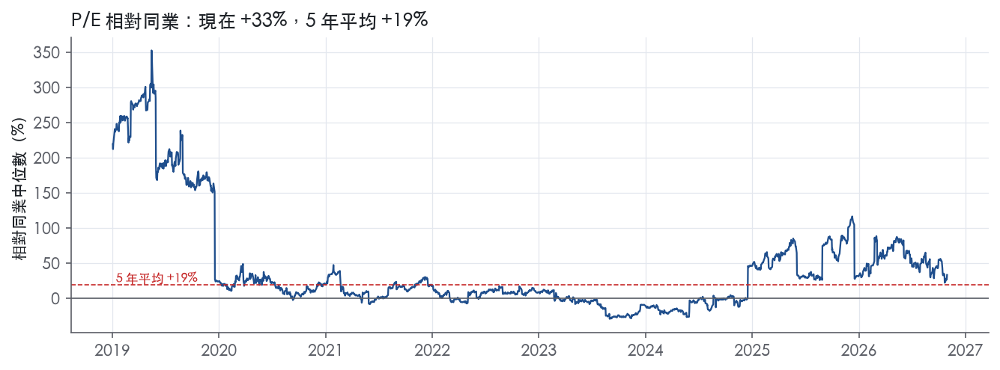
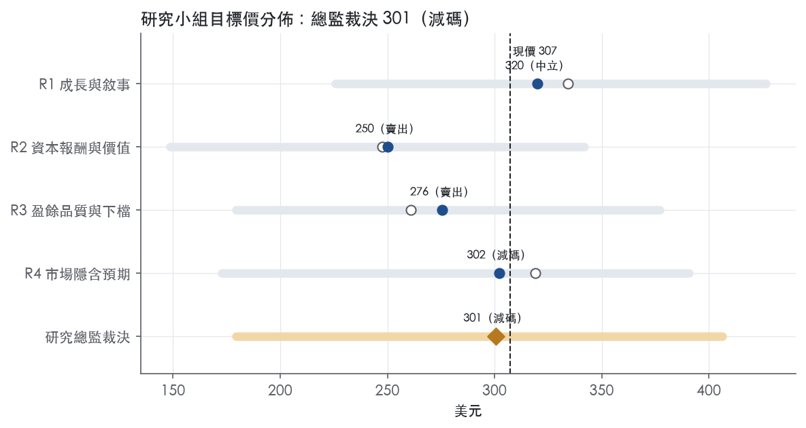
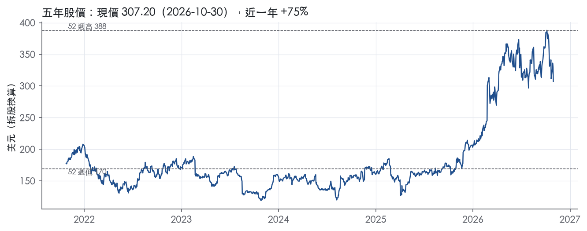

評等總表 › 資訊科技 › KEYS
盈餘到位倍數收斂，持平落後同業，減碼｜評等 減碼｜目標價 301
| 報告日 | 評等 | 目標價 | 當時股價 | 超額報酬 |
|---|---|---|---|---|
| 2026-10-30 | 減碼 | 301 | 307 | -10.3% |
| 評等 | 減碼 |
| 12 個月目標價 | 301 美元 |
| 現價 | 307.20 美元（2026-10-30） |
| 預期報酬 | 股價 -2.2%＋股息 0.0%＝總報酬 -2.2%；同業籃門檻 8.1%，超額 -10.3% |
| 估值方法 | P/E 32.0x，套在第 5–8 季的EPS（也就是一年後的未來四季） |
| 三情境 | 熊 179／基準 304／牛 406 |
| 研究流程 | 四位研究員兩輪辯論＋研究總監裁決 |
| 資料來源 | SEC EDGAR XBRL、Tiingo、FRED（全免費） |
盈餘到位倍數收斂，持平落後同業，減碼（研究總監裁決，四位研究員兩輪辯論後）
評等 減碼｜12 個月目標價 301 美元（總監三情境機率加權 312 與研究員中位數 289 各半）｜現價 307.20（2026-10-30）
預期報酬：股價 -2.2%＋股息 0.0%＝總報酬 -2.2%。同業籃門檻 8.1%，超額 -10.3%。
估值方法：P/E 32.0x，套在第 5–8 季的EPS（也就是一年後的未來四季）。三情境：熊 179（18%）／基準 304（52%）／牛 406（30%）。
什麼會讓研究總監改變看法：FY2027展望給出全年雙位數有機成長且FY2027Q1–Q2訂單持續高於營收，我會把y2上調、倍數移向P90並轉中性；FY2026Q4訂單低於1.93B則熊機率上調至24%以上。
| 過去四季（實際，FY2026Q3） | 未來四季 | 第 5–8 季 | 第 9–12 季 | |
|---|---|---|---|---|
| 營收（B） | 6.6B | 8.0B | 8.8B | 9.3B |
| 營收成長 | 25.5% | 22.0% | 10.0% | 5.0% |
| 營業利益率 | 20.3% | 24.5% | 24.0% | 23.0% |
| EPS（美元） | 7.30 | 8.73 | 9.49 | 9.60 |
| EPS 成長 | 132.2% | 19.6% | 8.7% | 1.2% |
| 每股股息（美元） | — | 0.00 | 0.00 | 0.00 |
| P/E（現價） | 42.1x | 35.2x | 32.4x | 32.0x |
| 股息殖利率（現價） | — | — | — | — |
過去四季為申報數字；預測為研究總監的假設、程式計算。倍數與殖利率都用現價計算，用來看現價對應各期獲利的高低。
| 情境 | 機率（歷史） | 故事 | 未來四季營收成長 | 第 5–8 季營益率 | 倍數 | 目標價 | 股價漲跌 |
|---|---|---|---|---|---|---|---|
| 熊 | 18%（14%） | 風險表第1、2條：AI資料中心測試支出消化，訂單先低於營收，比照FY2023持平、FY2024衰退分兩年走，固定費用去槓桿；現金2,605M對一年內到期債700M無償債尾部 | 14.0% | 20.0% | 27.0x | 179 | -41.6% |
| 基準 | 52%（55%） | Q4照指引，FY2027上半年兩成、下半年因併購週年與高基期收斂到一成，GAAP營益率守24%上下不超過FY2023高峰，前瞻成長降到個位數時倍數壓到P75 | 22.0% | 24.0% | 32.0x | 304 | -1.1% |
| 牛 | 30%（31%） | 1.6T與光互連世代更替讓商用通訊高成長延續到FY2028，訂單持續高於營收，市場不再壓縮倍數 | 27.0% | 26.5% | 35.0x | 406 | 32.3% |
目標價由程式依研究總監的驅動與倍數計算；機率由研究總監給定。括號內是歷史頻率：把這檔股票過去十年 12 個月報酬的波動形狀，置中在基準情境，結果落在各情境附近的比例。

四位研究員用不同方法各自估值，回應研究總監的質疑後交出第二輪，最後由總監逐點裁決。各研究員的主張見第七章，裁決理由見第八章，完整論證見《研究底稿》。
| 立場（一輪→二輪） | 加權目標價（一輪→二輪） | 評等（一輪→二輪） | 第二輪倍數 | 熊～牛目標價 | |
|---|---|---|---|---|---|
| R1 成長與敘事 | 中性→中性 | 334→320 | 中立→中立 | 34.0x | 226～427 |
| R2 資本報酬與價值 | 看空→看空 | 248→250 | 賣出→賣出 | 29.0x | 149～342 |
| R3 盈餘品質與下檔 | 看空→看空 | 261→276 | 賣出→賣出 | 30.0x | 179～377 |
| R4 市場隱含預期 | 中性→看空 | 319→302 | 中立→減碼 | 32.0x | 173～391 |
| 研究總監裁決 | 看空 | 301 | 減碼 | 32.0x | 179～406 |
目標價由程式依各自的驅動與倍數計算；評等＝機率加權總報酬 − 同業籃門檻。
Keysight 是一家為電子、通訊、半導體等領域客戶提供設計與測試解決方案的公司，業務涵蓋硬體、軟體與服務。公司自稱是「a global innovator in the computing, communications and electronics markets, committed to advancing our customers' business success by helping them solve critical challenges in the development and commercialization of their products and services」¹。其使命為「accelerating innovation to connect and secure the world」¹。公司營收主要來自 R&D 應用，製造與營運應用佔比較小¹。客戶遍及全球逾 100 個國家，涵蓋通訊、航太國防與政府、汽車、能源、工業、一般電子、半導體等產業¹。Keysight 每年服務約 40,000 個終端客戶，其中包含許多財星 1000 大企業¹。簡單說，Keysight 是賣「量測與驗證工具」給那些在做電子、通訊、半導體前沿研發的公司，客戶買的是加速產品上市的能力，不是單一硬體盒子。
Keysight 設有兩個報導分部：Communications Solutions Group（CSG）與 Electronic Industrial Solutions Group（EISG）¹。CSG 服務全球商用通訊與航太國防政府市場，解決方案涵蓋電子設計與測試軟體、儀器系統及相關服務，用於通訊系統在無線、有線（資料中心生態系）、企業與航太國防政府領域的設計、模擬、驗證、製造、安裝與優化¹。EISG 服務汽車與能源、半導體解決方案及一般電子等多元終端市場¹。FY2026Q3 財報顯示，CSG 營收 1,345M 美元，年增 43%，其中商用通訊成長 56%、航太國防政府成長 14%；EISG 營收 501M 美元，年增 21%，半導體、一般電子與汽車能源市場全面成長²。CSG 目前佔整體營收約七成、EISG 約三成，CSG 成長動能明顯強於 EISG，主因 AI 資料中心與高速互連需求拉動商用通訊。
產品面，硬體涵蓋頻譜與信號分析儀、網路分析儀、功率分析儀、協定分析儀、示波器、數位萬用電表、信號產生器、電源供應器、網路測試與網路可視性產品等¹。軟體分為儀器軟體應用、軟體應用解決方案、獨立軟體解決方案三大類，後者包含物理基礎虛擬原型、CAE 及流程與資料管理¹。服務則由 Keysight Global Services 提供產品支援、KeysightCare 技術應用支援，以及安裝、訓練等專業服務¹。公司明確表示正持續投資擴大軟體與服務的收入佔比，以提升經常性收入（recurring revenue）比重，軍規化、經常性收入結構是這家公司財務故事的核心。各產品線精確的營收貢獻比重，10-K 未揭露。
客戶面，Keysight 採直接銷售為主、搭配間接合作夥伴與電子商務的多元通路策略¹。公司「employs a comprehensive global direct sales channel with experienced management and highly technical sales and application engineers, including a strong local presence in both developed and emerging markets」¹。CSG 客戶包括晶片/模組原廠與代工廠、網路設備製造商（NEMs）、電信營運商與雲端運算服務商¹；航太國防政府客戶則包含研究機構、國防部會、安全機構及其承包商¹。EISG 客戶包括汽車 OEM 與 Tier 1/2 供應商、替代能源系統供應商、半導體與半導體設備公司的設計與生產團隊，以及大學與研究機構¹。地區分布方面，10-K 未揭露具體地區營收佔比。公司服務逾 100 個國家，顯示地理多元化程度高，單一地區集中度風險相對低，但無法從原文量化驗證。
過去四個季度 Keysight 營收與獲利呈加速成長軌跡，CSG 的通訊基礎建設與 AI 相關需求是主要驅動力。FY2025Q4（截至 2025-10-31）營收 1.42B 美元、年增 10.3%（dv 推導）。FY2026Q1 營收 1.60B 美元，年增 23.3%。FY2026Q2（截至 2026-04-30）營收 1.72 billion 美元，較去年同期 1.31 billion 美元成長³；GAAP 淨利 349M 美元、每股 2.02 美元，去年同期為 257M 美元、每股 1.49 美元³；CSG 營收 1,231M 美元、年增 35%，EISG 營收 486M 美元、年增 24%³；公司稱本季「delivered the strongest quarter in the company's history, capping a record first half with all-time highs in orders, revenue, EPS, and free cash flow」³，並表示「with strong year-to-date momentum and a robust pipeline of opportunities, we are raising our expectations for fiscal 2026」³；當季訂單達 2.051 billion 美元³。FY2026Q3（截至 2026-07-31）營收 1.85 billion 美元，較去年同期 1.35 billion 美元成長²；GAAP 淨利 397M 美元、每股 2.30 美元²；CSG 營收 1,345M 美元、年增 43%（商用通訊年增 56%、航太國防政府年增 14%），EISG 營收 501M 美元、年增 21%²；公司稱此為「second consecutive record quarter with orders over $2 billion」²，訂單達 2,091M 美元²。公司對 FY2026Q4 指引營收 1.930–1.950 billion 美元，年增約 37%，Non-GAAP 每股盈餘 3.34–3.40 美元²。毛利率方面，FY2026Q2 毛利率達 68.6%、FY2026Q3 為 65.9%，明顯高於 FY2025 同期水準，反映營收槓桿效益擴大。
公司將策略歸納為四大目標：投資打造差異化、首發市場的解決方案；在既有可服務市場中捕捉機會並擴展至有吸引力的鄰接領域；提升經常性收入；以及資本的策略性配置¹。在併購方面，公司於 2025 年 10 月完成收購 Spirent Communications plc，「complementing our position in communications test with additional differentiated solutions and deep customer relationships」¹；同月也完成收購 Synopsys 的 Optical Solutions Group 業務與 Ansys 的 PowerArtist RTL 業務，以「complement and expand our existing design engineering software portfolio and computer-aided engineering capabilities」¹。公司並指出正透過解決方案「enabling rapid advances in AI through solutions to increase the efficiency of AI compute clusters and to accelerate the deployment of new interconnect technologies that deliver greater speed and capacity in AI data center infrastructure」¹。管理層在 2026Q3 法說中表示：「Keysight's record Q3 results and outlook reflect the growing relevance of our strategy and portfolio, which is enabling customers to solve complex engineering challenges across our end markets」，並稱「we remain confident in our ability to sustain our momentum and deliver long-term value creation」²。
整體看，Keysight 當前的成長故事高度集中在 AI 資料中心、高速互連與通訊測試這一軸線，CSG 尤其是商用通訊的爆發式成長（56% 年增）是撐起整體營收與毛利率躍升的主因。Spirent、OSG、PowerArtist 等併購在補強軟體與通訊測試版圖，顯示公司正把自己從「硬體儀器商」往「設計驗證全流程軟體服務商」轉型，以拉高經常性收入比重與估值。惟目前股價已反映相當樂觀預期（trailing EV/Sales 8.1x、P/E 42.1x，分位數落在五年區間 80%、67% 附近），後續成長能否延續商用通訊這種速度，是接下來觀察重點。

Keysight 的護城河評為窄，趨勢穩定：我們有把握它未來 5 年以上 ROIC 仍高於資本成本，但還沒有把握延伸到 10 年以上。
Keysight 的優勢來自三類：無形資產、轉換成本、成本優勢；網路效應與效率規模沒有證據，不列入。
一、無形資產（專利與專有技術）
這是三項中最強的一項，核心是自有半導體與封裝技術，以及長期累積的量測科學能力。
二、轉換成本
轉換成本來自裝機基礎、軟體工作流程整合，以及校正與支援服務綁定，而且正在加深。
三、成本優勢（R&D 與營運規模）
規模讓 Keysight 能把高額研發攤在更廣的產品線上，這是區域型專業競爭者做不到的。
數字部分支持窄護城河：毛利率穩定、ROIC 多數年份高於資本成本，但 ROIC 波動過大，不足以支撐寬護城河。
支持的證據
衝突的證據
最近的走勢更值得警惕
仍維持窄而非下修為無的理由
最大的侵蝕風險是併購稀釋報酬率，其次是專業化競爭者與景氣循環。
窄護城河支持 Keysight 的目標倍數相對量測儀器同業小幅溢價，理由是毛利率穩定（十年標準差 3.8%）與技術加轉換成本的雙重優勢。但 ROIC 波動大，且近兩年已貼近資本成本，不支持寬護城河等級的長期溢價；現行 EV/EBITDA 位於 5 年 82.0% 分位，不宜以 FY2026Q2–Q3 的高峰利潤率外推。建議溢價期間以 5 年為上限，之後的終值倍數回歸同業水準，並以併購後的 ROIC 能否回升作為上修溢價的條件。
| 指標 | 最新 | 十年平均 | 標準差 | 最低 | 最高 |
|---|---|---|---|---|---|
| ROIC | 12.1% | 15.9% | 12.6% | -11.5% | 31.4% |
| 毛利率 | 62.1% | 59.8% | 3.8% | 53.4% | 64.6% |
| 營業利益率 | 16.3% | 14.7% | 10.0% | -10.2% | 24.9% |
| FCF 利潤率 | 23.8% | 17.7% | 5.4% | 8.0% | 23.8% |
| ROE | 15.5% | 17.8% | 7.7% | 5.3% | 28.3% |
程式計算。資本成本代理值（10 年債＋5%）：10.0%；ROIC 平均減資本成本：5.9%；ROIC 有資料的 9 年中，高於資本成本 7 年。
Keysight 的 LTM CFO／淨利 1.27x、FCF／淨利 1.17x，三年均值分別為 1.57x／1.37x，皆在綠燈區且遠高於十年平均門檻。應計比率 LTM -2.9%、三年與十年均為 -4.8%，顯示盈餘不是靠應計堆出來的，現金實際上跑得比帳列淨利快。唯一真正需要解釋的是程式標出的 FY2018→FY2019 淨利率跳動紅旗，以及計分表上 SBC／營收與（股利＋回購）／淨利 兩個黃燈，詳見下文。
有，而且跟得很穩。LTM CFO／淨利 1.27x、FCF／淨利 1.17x，近三年平均更高（1.57x／1.37x），十年平均同樣在 1x 以上（1.83x／1.52x），全部對應綠燈。最新一季（FY2026Q3）CFO 0.44B、FCF 0.40B，對應淨利 0.40B，現金流與淨利幾乎同步（資料包近八季表）。應計比率常年為負（LTM -2.9%、三年與十年均 -4.8%），代表營業現金流持續超過淨利，盈餘的「含金量」高，不是靠應收帳款或存貨堆出來的。FY2025 應收帳款成長只比營收成長快 1.6pp、存貨成長反而比營收成長慢 5.2pp，營運資金沒有在吃盈餘。9個月期（截至2026-07-31）CFO 達 1,379M，去年同期 1,184M，年增幅與淨利年增幅（617M→1,027M）方向一致，沒有背離²。
Q3 FY2026 GAAP 淨利 397M（EPS 2.30）對比非 GAAP 淨利 531M（EPS 3.07），兩者差距約 134M²。新聞稿本身的 Reconciliation 明細未完整列出調整項目名稱，但從現金流量表可見最大的非現金加回項是攤銷 202M（九個月）與股權薪酬 181M（九個月），去年同期分別為 104M 與 129M，攤銷年增近一倍，與近期 Spirent、OSG、PowerArtist 收購產生的無形資產有關²。折舊 116M（九個月）相對穩定²。公司在10-K揭露 2025 年完成 Spirent（2025年10月）、OSG、PowerArtist 收購，2024年完成 ESI Group 收購，這些併購活動是攤銷激增的主因¹。我的判斷是：SBC 是真實的經濟成本（稀釋股東權益），不該在估值時完全加回；攤銷主要來自收購的無形資產攤提，屬於非現金但反映真實的併購出價，也不宜完全忽略，但其現金影響已經結束。新聞稿未揭露重組費用細項，故無法確認是否有一次性重組成本，此處資訊不足。
槓桿極低，付息能力強。LTM 淨負債／EBITDA 為 -0.05x（淨現金狀態），十年平均也是負值（-0.62x），遠低於3.00x紅線。截至2026-07-31，現金2,605M對長期債務1,817M加流動部分700M，總債務約2,517M，淨負債接近零（資料包）²。利息保障倍數 LTM 12.3x、三年12.2x、十年9.14x，皆在綠燈區，付息完全無壓力。稀釋股數變動：LTM 0.0%、三年-1.7%，顯示公司持續靠回購抵銷SBC稀釋，股數並未淨增加。資本配置上，九個月回購（含消費稅）520M，去年同期278M，回購力度明顯加大，同時公司持續併購擴張（Spirent、OSG、PowerArtist）²¹。股東權益從7,075M留存收益累積至8,102M，資產負債表健康，沒有舉債回饋股東的跡象（淨負債為負）²。
1）程式紅旗：淨利率 FY2018→FY2019 跳動 +10pp。 這是真實的結構性改善而非一次性灌水：FY2018 營益率為 -10.2%（EBITDA為-0.09B），FY2019 回升至16.5%（EBITDA 1.02B），資料包顯示FY2018全年營益率異常為負值（資料包年度表）。10-K 原文未在本次節錄中直接說明FY2018的虧損原因，但根據公司當年業務擴張與整合節奏（如大型併購整合費用）推測屬於一次性整合成本吞噬營益，隨後2019年業務正常化、毛利率同步從54.4%升至58.9%，是結構性而非會計操縱（資料包年度表）。我認為此紅旗是歷史事件，對當前盈餘品質評估無現實意義，可視為解釋清楚的假警報。
2）黃燈：SBC／營收 LTM 3.3%，高於十年平均2.2%且超過綠燈門檻3.0%。 這是真實成本上升的訊號：九個月SBC從129M增至181M，年增40%，快於營收成長（資料包現金流量表）²。公司近年持續擴大軟體與高階人才招募（10-K揭露軟體工程師佔R&D多數），SBC占比攀升與業務轉型（軟體化、多次收購整合）相符，屬於可解釋但需持續觀察的趨勢，不加回SBC是本系統一貫原則，估值應視為真實費用。
3）黃燈：（股利＋回購）／淨利 LTM 49.0%，略低於50%綠燈門檻，三年平均60.7%。 公司不配息（trailing股息率—），回饋全靠回購（資料包快照、年度表）。LTM該比率略低於綠燈線主因淨利基期（含Spirent等收購後新增攤銷與整合成本）相對提高，而回購金額其實在加速（九個月520M對比去年278M，年增87%）²。此黃燈屬於分母（淨利）暫時被非現金費用壓低所致的假警報，現金面回購力度實際在增強，不是真問題。
盈餘品質屬中高檔，現金轉換穩定、應計比率長期為負、槓桿近乎零，估值錨定可以直接用GAAP盈餘，不需要像低品質個股那樣大幅打折。但SBC占營收比重上升是真實稀釋成本，建議估值模型不要把SBC加回去算「核心獲利」，否則會高估現金獲利能力，尤其目前trailing P/E 42.1x已站在5年分位67%、EV/EBITDA在82%分位，偏貴的倍數更不該疊加樂觀調整後盈餘。槓桿极低且利息保障12.3x完全不構成限制倍數的理由，若要給估值溢價，支撐點應放在現金流穩定性與低槓桿，而非盈餘數字本身的膨脹。
| 項目 | LTM | 近三年 | 十年 | 燈號 | 規則 |
|---|---|---|---|---|---|
| 營業現金流／淨利 | 1.27x | 1.57x | 1.83x | 綠 | ≥1.00x 綠、<0.80x 紅 |
| 自由現金流／淨利 | 1.17x | 1.37x | 1.52x | 綠 | ≥0.90x 綠、<0.60x 紅 |
| 應計比率（(淨利−CFO)／平均總資產） | -2.9% | -4.8% | -4.8% | 綠 | ≤0.0% 綠、>5.0% 紅 |
| SBC／營收 | 3.3% | 2.7% | 2.2% | 黃 | ≤3.0% 綠、>8.0% 紅 |
| 淨負債／EBITDA | -0.05x | 0.05x | -0.62x | 綠 | ≤1.50x 綠、>3.00x 紅 |
| 利息保障倍數（營業利益／利息） | 12.3x | 12.2x | 9.14x | 綠 | ≥8.00x 綠、<3.00x 紅 |
| 稀釋股數年變動 | 0.0% | -1.7% | 0.1% | 綠 | ≤0.0% 綠、>3.0% 紅 |
| （股利＋回購）／淨利 | 49.0% | 60.7% | 57.2% | 黃 | ≥50.0% 綠、<0.0% 紅 |
| 應收帳款成長 − 營收成長（FY2025） | +1.6pp | — | — | 綠 | ≤5pp 綠、>15pp 紅 |
| 存貨成長 − 營收成長（FY2025） | -5.2pp | — | — | 綠 | ≤5pp 綠、>15pp 紅 |
程式計算；燈號以 LTM（無則近三年平均）判定。
| 風險 | 觸發指標（看什麼數字、在哪裡看） | 對 EPS 的影響方向與粗略幅度 | 未來 12 個月發生機率 | 出處 |
|---|---|---|---|---|
| CSG／商用通訊成長急遽放緩（AI 資本支出週期見頂） | 季報 CSG 分部營收年增率、commercial communications 年增率（8-K 分部表）；訂單（Orders）年增是否低於營收年增 | 負向、大：目前 CSG 年增 43%、商用通訊年增 56%（FY2026Q3）撐起整體毛利率躍升，一旦回落，營益率會從 25.0%（FY2026Q3）快速壓回 16–17% 區間（FY2024–25 水準） | 中 | ²＋ |
| 終端市場需求波動、訂單被取消或延後（原文明示的核心風險） | 訂單（Orders）金額與年增率 vs 營收年增率是否背離；積壓訂單（backlog）變化（10-K 揭露 FY2025 backlog 2,697M，FY2024 為 2,375M） | 負向、中～大：原文指出「reduced, delayed or canceled orders」會直接打到營收與毛利，且「a significant portion of our operating expenses is relatively fixed」，需求下滑時營益率會被費用剛性放大 | 中 | 10-K 年報 FY2025 Item 1A（風險因素） |
| 關稅與出口管制（中國相關）衝擊供應鏈與客戶需求 | 美國對中關稅政策公告日期、公司是否在季報揭露因關稅調整的毛利率或成本；客戶（中國相關供應鏈業者）是否被列入 Commerce「Lists of Parties of Concern」 | 負向、方向明確但幅度未量化：原文稱關稅會「increase the cost of our customers' components」並「could reduce demand for our customers' products」，公司未給出具體財務影響數字 | 中 | 10-K 年報 FY2025 Item 1A（風險因素） |
| 併購整合風險（Spirent、OSG、PowerArtist 等多筆同期完成的收購） | 商護減損（goodwill impairment）是否出現於財報附註；併購後營收/毛利率是否達到管理層預期的 synergy | 負向、中：原文明示「we may be required to incur impairment charges」，Spirent、OSG、PowerArtist 均於 2025 年 10 月同期完成，整合複雜度高 | 中 | ⁴＋ |
| 製造產能與需求錯配（上行時產能不足、下行時固定成本侵蝕利潤） | 存貨水位（Inventory，資產負債表）變化方向；毛利率季度環比變化 | 負向、中：原文稱產能過剩時「fixed costs associated with excess manufacturing capacity would adversely affect our income, margins」；FY2026Q3 存貨 1,047M 美元與 FY2025 年底 1,050M 美元基本持平，顯示目前未見明顯超額備貨 | 低～中 | ⁴＋【判（存貨數字取自8-K資產負債表）】 |
CSG／商用通訊急遽放緩是目前最大的單一風險點。 公司 FY2026Q3 CSG 營收年增 43%、商用通訊年增 56%²，這個成長率遠高於公司歷史常態（FY2023、FY2024 整體營收分別只成長 0.8%、衰退 8.9%，依資料包年度表），目前的估值（trailing EV/Sales 8.1x、P/E 42.1x，均處五年分位 80% 以上）是建立在這個高成長能延續的假設上。10-K 原文本身承認「visibility into our markets is limited」，且「quarterly sales and operating results are highly dependent on the volume and timing of technology-related spending and orders received during the fiscal quarter, which are difficult to forecast and may be cancelled by our customers」⁴。一旦 AI 資料中心資本支出週期轉向，CSG 的高基期效應會讓年增率快速收斂，而營益率的高槓桿效果會反向發生——FY2026Q2、Q3 毛利率分別衝到 68.6%、65.9%，明顯高於 FY2024、FY2025 常態的 62–63%（資料包年度表），這段超額毛利率很可能隨量能回落而消退。
終端市場需求的季度波動是公司原文反覆強調的核心風險⁴。 原文明確列出「reduced, delayed or canceled orders」、「increased risk of excess and obsolete inventory」、「increased price pressure」等後果，並指出由於「a significant portion of our operating expenses is relatively fixed in nature due to sales, R&D and manufacturing costs」，需求下滑時定價壓力會直接壓縮營益率⁴。目前訂單與營收同步強勁（FY2026Q3 訂單 2,091M 美元 vs 營收 1,846M 美元，訂單仍高於營收，8-K 財報表），但這也意味著未來若訂單增速低於營收增速，將是需求降溫的早期訊號。
關稅與出口管制風險在 10-K 中被用大量篇幅描述，但公司未給出具體財務影響數字⁴。 原文稱「commencing in the second quarter of fiscal 2025, new U.S. tariffs applying to imports from all countries were announced, including significantly higher rates on imports from China」，且公司客戶與供應商「have strong ties to doing business in China」，关税可能「increase the cost of our customers' components and raw materials, which could make our customers' products and services more expensive and could reduce demand for our customers' products」⁴。這條風險的方向明確、但幅度不可量化，只能持續追蹤政策公告日期與公司季報中是否揭露具體毛利率衝擊。
併購整合風險因 Spirent、OSG、PowerArtist 三筆收購同在 2025 年 10 月完成而被放大。 原文警示「we may record significant goodwill and other assets as a result of acquisitions or investments, and we may be required to incur impairment charges, which could adversely affect our consolidated financial position and results of operations」⁴，且整合成敗取決於「retention of key employees and/or customers」等多項因子⁴。由於三筆交易集中在同一季度完成，管理層同時消化三套文化、系統與客戶關係的執行風險高於單筆收購。
製造產能與需求錯配是週期性公司的經典風險，目前尚未看到明顯訊號。 原文稱「when demand is lower than our expectations, our manufacturing capacity will likely exceed our production requirements... our fixed costs associated with excess manufacturing capacity would adversely affect our income, margins and operating results」⁴。目前存貨水位（FY2026Q3 為 1,047M 美元，對比 FY2025 年底 1,050M 美元）並未顯示明顯累積，暫列為較低優先級的觀察項。
現價 307.20 對應 trailing（過去四季）P/E 42.1x、EV/EBITDA 30.9x、EV/EBITA 33.8x、EV/Sales 8.1x、FCF 殖利率 2.8%。主要估值倍數 P/E 現在 42.1x，落在5 年區間第 67 百分位（P10／P50／P90 = 24.4x／30.4x／54.3x）。

把程式的機械基準預測放到現價下，市場付的前瞻倍數是：P/E（未來四季） 46.1x、P/E（第 5–8 季） 40.7x。反推 DCF 顯示市價隱含未來五年營收年成長 18.7%（WACC 9.0%、終值成長 3.0%、FCF 利潤率 19.6%，SBC 不加回）。
| 倍數 | 現在 | 5 年 P10 | 5 年 P50 | 5 年 P90 | 現在分位 | 全期 P50 |
|---|---|---|---|---|---|---|
| P/E | 42.1x | 24.4x | 30.4x | 54.3x | 67.3% | 37.1x |
| EV/EBITDA | 30.9x | 16.8x | 21.4x | 37.8x | 82.0% | 22.8x |
| EV/EBITA | 33.8x | 18.2x | 23.5x | 42.0x | 81.7% | 24.9x |
| EV/EBIT | 39.8x | 19.5x | 26.3x | 49.5x | 81.8% | 29.0x |
| EV/Sales | 8.1x | 4.6x | 5.5x | 8.9x | 86.1% | 5.0x |
| P/S | 8.1x | 4.6x | 5.5x | 8.9x | 86.1% | 5.0x |
| P/FCF | 36.2x | 20.9x | 27.5x | 39.8x | 86.3% | 26.9x |
trailing 倍數（股價 ÷ 過去四季）；分位以每個交易日計算。
同業籃：TER, A, FTV, AME, ROP（手動名單（playbooks/peers.yaml））。評等門檻 8.1%：同業「倍數不變下持有一年」的隱含報酬中位數（＝ FCF 殖利率 ×(1＋g)＋g，g 為 5 年營收年複合成長並夾在 −2%～8%），每家夾在 0～15%、P/E 低於 5 倍視為資料可疑而排除，中位數再限制在 10 年債到 10 年債＋5% 之間。
| 代號 | 市值 | 5 年營收 CAGR | 營益率 | ROIC | P/E | 5 年 P/E 中位數 | EV/EBITDA | P/FCF | 隱含報酬 |
|---|---|---|---|---|---|---|---|---|---|
| KEYS | 53.1B | 5.0% | 20.3% | 12.1% | 42.1x | 30.4x | 30.9x | 36.2x | 7.9% |
| TER | 42.8B | 0.4% | 32.1% | — | 31.6x | 31.8x | — | 41.8x | 2.8% |
| A | 49.3B | 5.4% | 22.2% | 16.5% | 34.5x | 30.6x | 27.0x | 38.9x | 8.1% |
| FTV | 19.4B | -2.1% | 19.6% | 5.7% | 31.1x | 24.6x | 17.2x | 17.9x | 3.5% |
| AME | 55.4B | 10.3% | 25.9% | 13.2% | 35.3x | 29.9x | 23.2x | 30.4x | 11.6% |
| ROP | 46.1B | 14.5% | 28.0% | 6.4% | 19.3x | 25.2x | 17.6x | — | 13.6% |
| 同業中位數 | 5.4% | 25.9% | 9.8% | 31.6x | 29.9x | 20.4x | 34.6x | 8.1% |
全部 trailing，程式以各公司 SEC XBRL 與 Tiingo 行情計算；第一列為本檔。
P/E 相對同業中位數：現在 33.4%，過去 1 年平均 59.1%、3 年 30.9%、5 年 19.5%；EV/EBITDA 相對同業中位數：現在 50.3%，過去 1 年平均 91.4%、3 年 28.3%、5 年 10.4%。

事後實現前瞻倍數帶（P/E，2018-09-17..2025-09-15）：P10／P50／P90 = 21.8x／28.0x／36.8x。它是每個交易日的股價除以之後四季實際實現的指標；一年後，今天的第 5–8 季正是那時的未來四季，所以這條帶是 12 個月目標價的同口徑倍數。因為用的是事後實際而非當時預期，過去成長超乎預期的公司這條帶會偏低。
程式的機械基準（成長率從過去四季年增率三年收斂到 6%、利潤率持平）用 事後實現前瞻 P/E P50 估值得到 211（-31.2%），市場現行前瞻倍數（現價 ÷ 基準 未來四季指標）一年後持平，套在基準 第 5–8 季指標得到 348。這兩個數字只是參考點，不是本報告的目標價；研究員對這個定價的回應在第七章。
下表是每位研究員第一輪（各自獨立）與第二輪（回應研究總監的質疑後）的結果。目標價全由程式依各自的假設計算。
| 立場（一輪→二輪） | 加權目標價（一輪→二輪） | 評等（一輪→二輪） | 第二輪倍數 | 熊～牛目標價 | |
|---|---|---|---|---|---|
| R1 成長與敘事 | 中性→中性 | 334→320 | 中立→中立 | 34.0x | 226～427 |
| R2 資本報酬與價值 | 看空→看空 | 248→250 | 賣出→賣出 | 29.0x | 149～342 |
| R3 盈餘品質與下檔 | 看空→看空 | 261→276 | 賣出→賣出 | 30.0x | 179～377 |
| R4 市場隱含預期 | 中性→看空 | 319→302 | 中立→減碼 | 32.0x | 173～391 |
| 研究總監裁決 | 看空 | 301 | 減碼 | 32.0x | 179～406 |
目標價由程式依各自的驅動與倍數計算；評等＝機率加權總報酬 − 同業籃門檻。
分歧度：第一輪 加權目標價 248～334（區間＝現價的 28%）· 倍數 29～37x · 立場 中性×2、看空×2；第二輪 加權目標價 250～320（區間＝現價的 23%）· 倍數 29～34x · 立場 中性×1、看空×3。

| 研究員 | 第二輪主張 | 堅持的理由 |
|---|---|---|
| R1 成長與敘事 | 中性，給未來四季EPS 34倍P/E；AI通訊成長是真的。 | 一年後營收成長10%仍是同業中位5.4%的兩倍，不放棄溢價。 |
| R2 資本報酬與價值 | 偏空，給一年後的未來四季EPS 29倍P/E。 | 併購商譽3,462M墊高資本，ROIC回不到過去高點，倍數不上調。 |
| R3 盈餘品質與下檔 | 偏空，給30倍P/E；基準情境目標價262.38美元低於現價。 | 偏空來自基準情境而非熊機率，有機成長未證實前倍數不上調。 |
| R4 市場隱含預期 | 偏空，給32倍P/E；清掉一次性利潤後，市場高估成長持續期。 | 熊機率18%高於歷史15%：起點在週期高點，營收年增36.5%。 |
每位研究員的逐條回應與完整論證見《研究底稿》（KEYS_研究底稿_2026-11-01.docx）。
| 分歧點 | R1 成長 | R2 價值 | R3 品質 | R4 預期 | 什麼資料會分出勝負 |
|---|---|---|---|---|---|
| rev_growth_y1（NTM） | 23%：Q4 指引約 37%＋積壓增加；併購貢獻假設 6pp，Q3 有機兩成以上 | 19%（照基準）：Q4 約 37%＋FY2027Q1–Q3 有機約 14% | 20%：併購貢獻假設 9pp；Q2→Q3 訂單缺口收窄 | 22%：backlog 2,697M 與 Q3 訂單 2,091M 支撐，不外推加速 | FY2026Q4 財報（2026-12）：Q4 訂單是否仍高於營收指引 1.93–1.95B；FY2027Q1（2027-03）報表年增 |
| rev_growth_y2（Q5–Q8） | 10%：連兩季訂單超 2B | 8%：併購週年後回中個位數 | 8%：高成長後降檔 | 10%：FY2027 下半年收斂到一成 | FY2027Q1–Q2 訂單年增是否仍高於營收年增；FY2027 展望有機成長是否雙位數 |
| op_margin_y2（Q5–Q8） | 24.5%：不超過 FY2023 高峰 24.9% | 23%：乾淨毛利率證據只有 Q3 一季 | 23%：費用剛性、退款墊高起點 | 24%：Q3 GAAP 25.0% 為上緣，低於 FY2023 高峰 | FY2026Q4 GAAP 營益率（不含一次性）是否 ≥24%；FY2027Q2 GAAP 毛利率是否守 65% |
| 目標倍數 | 34x eps@ntm：自家 5y trailing P50 30.4x＋小幅溢價 | 29x eps@q5_q8：前瞻帶 P50 28.0x 略上，商譽墊高資本 | 30x eps@q5_q8：P50–P75 之間 | 32x eps@q5_q8：P75 31.8x 略上方 | 一年後同業倍數與 KEYS 溢價；FY2027 展望給出的前瞻成長 |
| tax_rate | 18% | 22.1%（基準） | 19%：錨去年九個月無稅務利益水準 | 22.1%（基準） | FY2026Q4 GAAP 有效稅率；10-K FY2026 稅率附註 |
1. rev_growth_y1：選 R4 的 22%。 四人差在 FY2027Q1–Q3 的有機成長。R2 的 19% 照抄基準，依他自己的拆解隱含併購週年後有機只有約 14%，但九個月訂單 5,787M 高於營收 5,163M²、FY2025 底 backlog 由 2,375M 增至 2,697M⁵，累積的訂單撐的是未來幾季而不只 Q4。R1 的 23% 以併購貢獻 6pp 推出 Q3 有機兩成以上，再外推整個 NTM；但 R3 指出 Q2→Q3 訂單只從 2,051M 增至 2,091M、營收卻從 1,717M 升到 1,846M³，訂單超過營收的缺口在收窄，加速不能外推。R4 的 22% 同時用上 backlog 與 Q3 訂單、不外推加速。預測紀錄上本部所有來源的營收誤差中位數都偏低（R1 −0.4%、R2 −0.6%、R3 −0.7%、R4 −0.4%），這是不選兩個最低數字的另一個理由。
2. rev_growth_y2：選 10%（R1 與 R4 相同，登記為 growth）。 R2、R3 的 8% 引「高成長後降檔」，但歷史模式本身支持一成：FY2018 成長 21.6% 後 FY2019 仍有 11.0%，FY2021 成長 17.1% 後 FY2022 仍有 9.7%（dv 年度表），兩次都是先降到一成、第三年才掉到低個位數或負值。R1 的證據是連兩季訂單超過 2B 且高於營收，一年後 10% 仍是同業中位 5.4% 的兩倍。R2 的營收勝過基準率只有 46%，把基準 12.5% 壓到 8% 需要比「回到中個位數常態」更強的證據。10% 已比基準低 2.5 點，吸收了併購週年與高基期。
3. op_margin_y2：選 R4 的 24%。 分歧只有一點，但乘上倍數就是目標價 4–5% 的差距。四人都同意 Q2 的 68.6% 含 IEEPA 退款（銷貨成本沖減 93M、營收沖減 40M³）不可外推，乾淨起點是 Q3 毛利率 65.9%、GAAP 營益率 25.0%。R2、R3 的 23% 漏了一件事：Q3 65.9% 已高於十年最高的 FY2023 64.6%，而 FY2023 成長只有 0.8% 卻守住 24.9% 營益率——成長降檔那年利潤率不必然回落，回落發生在 FY2024 營收 −8.9% 那年（16.7%）。R1 的 24.5% 撞到他自己承認的機制（Q3 R&D 312M 對 250M、SG&A 446M 對 354M²，費用增速逾兩成五），且 R1 是本部營業利益誤差偏高最多的來源（+2.6%）；R2 則系統性偏低（−1.1%）。R4 勝過基準率 76% 為四人最高，24% 落在乾淨起點與 FY2023 高峰之下。
4. 目標倍數：選 R4 的 32x，eps、q5_q8。 這是 −20% 到 +1% 差距的來源。R2 不取 P75 的理由是「商譽 3,462M 墊高投入資本，同樣利潤率下 ROIC 回不到帶形成期水準」，但 FY2026 的利潤率不是「同樣的」：Q3 營益率 25.0% 對 FY2025 的 16.3%，ROIC 回升方向明確；而且事後實現帶 2018–2025 形成期的 ROIC 本來就在 FY2019 19.0%、FY2022 31.4%、FY2025 12.1%之間大幅波動，帶的中位數不是在高 ROIC 區間形成的。R3 的「P50–P75 之間」站得住，但他只給帶偏誤 2 倍：這一年 EPS 由 FY2025 4.91 升到 LTM 7.30，正是「實現值遠高於當時預期、把帶拉低」的典型年份。R1 的 34x@ntm 以自家 5y trailing P50 30.4x 為底，口徑正確，但上緣參照 AME 35.3x 是 trailing 現行倍數，吃到了類股現在高於 5 年中位（AME 29.9x）的部分。R4 的 32x 錨在 P75 31.8x 略上方：帶偏誤、窄護城河往上，一年後前瞻成長只剩個位數往下。對同業：32x 高於同業 5 年 P/E 中位 29.9x 與現行 31.6x，同口徑下 KEYS 的溢價比表面差距略大，但低於過去 5 年平均溢價 19.5%、遠低於現在的 33.4%。溢價收斂的理由全是個股的：成長 22%→10%→5%、利潤率站在十年高點之上、護城河窄。利率不在理由裡，10 年債 4.98% 已在現價與 8.1% 門檻裡；本行科技指引「倍數以現值為準、不靠倍數擴張」，32x 不靠擴張。
5. tax_rate：選 R3 的 19%。 基準 22.1% 是近三年中位數，含 FY2024 低獲利年的稅率結構。近兩個乾淨季度有效稅率都低於 19%（Q3 稅前 477M、所得稅 80M²），但公司明言影響 Q4 GAAP 稅率的項目「not currently estimable」²，股價一年漲 75.2% 期間股權獎勵的超額稅務利益不會持續（R3 的假設，接受）。去年同期九個月稅前 760M、所得稅 143M²是沒有一次性利益的水準，19% 錨在這裡。R1 的 18% 沒有另外的證據。
漂移與總經。 四人靠攏比例 4–29%，全部低於 50%，接受的意見都附證據：R1 倍數 37→34 是回應 G2（類股重估重複計算）；R3 熊機率 24→20 是回應 Q1 並保留「訂單缺口收窄」這條有日期的證據；R4 中性轉偏空只來自 E2、E3 的利潤率校正，成長與倍數未動。沒有需要退回的漂移。總經偏離：四人均為空，無需裁決；最終假設以本行基準情境為準（GDP 1.8、10 年債 4.98 持平、美元 121.3）；R1、R4 熊情境引的美元 124.0 是本行下行情境內的數字，不是基準偏離。10 年債敏感度 t 值 −1.6，不採用。
與機械基準不同的驅動（基準→最終）：
目標倍數 32x，eps，q5_q8。錨：事後實現前瞻 P/E 帶 P75 31.8x 略上方，不到 P90 36.8x。口徑：套在 Q5–Q8 EPS，直接和前瞻帶比，不換算。低於市場持平倍數 46.1x（套基準 Q5–Q8 → 348、+13.4%，程式）與零報酬倍數 40.7x，但那兩個數字被基準營益率 20.2% 灌高；R4 第二輪推論，校正利潤率後現價對他的 Q5–Q8 EPS 付的零報酬倍數只略高於 32x（程式：32x → 292.05、−4.9%）。我的倍數和市場現在付的差距不大，差在「一年後再壓一點」。
| 情境 | 機率 | 來源 | 相對基準不同的驅動 | 倍數 | 故事 |
|---|---|---|---|---|---|
| 牛 | 30% | R4 牛情境 | y1 27%、y2 16%、y3 9%；營益率 25.5%／26.5%／26.5% | 35x | 1.6T 與光互連世代更替讓商用通訊高成長延續到 FY2028，訂單持續高於營收，市場不再壓縮倍數 |
| 基準 | 52% | director | — | 32x | Q4 照指引，FY2027 上半年兩成、下半年收斂到一成，GAAP 營益率守 24% 上下；前瞻成長降到個位數，倍數壓到 P75 |
| 熊 | 18% | R3 熊情境 | y1 14%、y2 1%、y3 −8%；營益率 21%／20%／17.5% | 27x | 風險表第 1、2 條：AI 資料中心測試支出消化，訂單先低於營收，比照 FY2023 持平、FY2024 衰退分兩年走，固定費用去槓桿；現金 2,605M 對一年內到期債 700M²，無償債尾部 |
機率怎麼來：
差距不在盈餘：我的 FY2027 路徑（成長 22%、GAAP 營益率 24.5%）與 Q4 指引、訂單動能一致，市場隱含的也差不遠；反推 DCF 的 18.7% 是被基準 FCF 利潤率 19.6% 灌高的數字。差距在倍數的「一年後」：股價已從 52 週高點 388.03 壓到 307.2（快照），市場開始對持續期打折，現價對校正後的 Q5–Q8 EPS 付的只略高於 32x；我認為一年後前瞻成長剩個位數時，倍數會再壓到 P75 附近，盈餘成長被倍數壓縮大致抵消，總報酬接近持平。立場 bearish 與減碼一致：不是預期大跌，而是持平報酬低於同業籃隱含的 8.1%、也低於 KEYS 歷史中位數 +25%；要達到門檻，一年後市場得對前瞻成長 5% 的量測公司付接近 P90 36.8x，我不押這個。若程式評等落在中立邊緣，立場不變——基準情境報酬接近零、無股利緩衝。
現價 307.20 → 點估目標價 304 → 機率加權目標價 312 → 目標價 301，差距拆成五段：成長順延 +41 美元（市場現行倍數 46.1x 一年後持平、獲利照機械基準）；倍數差 -107 美元（總監倍數 32.0x vs 市場持平倍數 46.1x，同一機械基準預測）；盈餘差 +62 美元（總監預測的第 5–8 季EPS 0.0B vs 機械基準 0.0B，同一倍數）；情境不對稱 +8 美元（機率加權減點估）；研究小組平均 -12 美元（總監機率加權 312 與研究員第二輪中位數 289 各半）。各段相加等於目標價減現價。本階段未接賣方共識，差距以市場隱含預期為對照。
| 驅動 | 機械基準 | 研究總監 | 差異 |
|---|---|---|---|
| 未來四季營收成長 | 19.0% | 22.0% | +3.0 pp |
| 第 5–8 季營收成長 | 12.5% | 10.0% | -2.5 pp |
| 第 9–12 季營收成長 | 6.0% | 5.0% | -1.0 pp |
| 未來四季營益率 | 20.2% | 24.5% | +4.2 pp |
| 第 5–8 季營益率 | 20.2% | 24.0% | +3.7 pp |
| 第 9–12 季營益率 | 20.2% | 23.0% | +2.7 pp |
| D&A／營收 | 5.9% | 5.9% | ＝ |
| 資本支出／營收 | 2.1% | 2.8% | +0.8 pp |
| SBC／營收 | 3.2% | 3.2% | ＝ |
| 稅率 | 22.1% | 19.0% | -3.1 pp |
| 股數年變動 | 0.0% | -0.5% | -0.5 pp |
研究總監只寫偏移，未寫的沿用基準。
| 期 | 營收 | 成長 | 營益率 | 營業利益 | EBITDA | EBITA | 淨利 | EPS | FCF | 期末淨負債 |
|---|---|---|---|---|---|---|---|---|---|---|
| 未來四季 | 8.0B | 22.0% | 24.5% | 2.0B | 2.4B | 2.3B | 1.5B | 8.73 | 2.0B | -1.5B |
| 第 5–8 季 | 8.8B | 10.0% | 24.0% | 2.1B | 2.6B | 2.4B | 1.6B | 9.49 | 2.2B | -3.1B |
| 第 9–12 季 | 9.3B | 5.0% | 23.0% | 2.1B | 2.7B | 2.5B | 1.6B | 9.60 | 2.2B | -4.7B |
程式依上表的驅動計算；季度用最近四季季節性分攤；不含營運資金變動。
估值方法：P/E 32.0x，套在第 5–8 季的EPS（也就是一年後的未來四季）。研究總監目標倍數的錨：事後實現前瞻P/E帶P75 31.8x略上方：帶偏誤（本年EPS遠超預期拉低帶）與窄護城河往上，一年後前瞻成長只剩個位數不到P90 36.8x；同口徑下對同業5年中位29.9x的溢價低於KEYS 5年平均19.5%，收斂理由為成長降檔、利潤率在十年高點之上、護城河窄，不含利率。
計算：EPS（第 5–8 季） 9.49 × 32.0x → 點估目標價 304（-1.1%）；隱含 P/E（未來四季）34.8x、P/E（第 5–8 季）32.0x、EV/EBITDA（第 5–8 季）19.2x、FCF 殖利率（第 5–8 季）4.2%。
總監三情境機率加權目標價 312，研究員第二輪中位數 289，兩者各半＝目標價 301；預期報酬 股價 -2.2%＋股息 0.0%＝總報酬 -2.2%；減評等門檻 8.1%（同業籃隱含報酬中位數（TER, A, FTV, AME, ROP））＝超額報酬 -10.3% → 評等 減碼（超額 >+15% 買進、+5～+15% 加碼、±5% 中立、−5～−15% 減碼、<−15% 賣出）。同一份資料重開研究小組，超額約有正負四個百分點的雜訊（一個標準差，二十檔實測）；以此估計，評等落在其他級距的機率約二成。
| 情境 | 機率 | 未來四季成長 | 第 5–8 季成長 | 第 5–8 季營益率 | EPS（第 5–8 季） | 倍數 | 目標價 |
|---|---|---|---|---|---|---|---|
| 熊 | 18% | 14.0% | 1.0% | 20.0% | 6.64 | 27.0x | 179 |
| 基準 | 52% | 22.0% | 10.0% | 24.0% | 9.49 | 32.0x | 304 |
| 牛 | 30% | 27.0% | 16.0% | 26.5% | 11.61 | 35.0x | 406 |
| 主張 | 驗證日 | 看哪個數字 | 門檻 |
|---|---|---|---|
| FY2026Q4營收不低於指引下緣且GAAP營益率不含一次性項目仍在24%以上 | 2026-12-15 | 、 | 營收≥1.93B 且 營益率≥24% |
| 併購滿週年後FY2027Q1報表年增斷層式回落但訂單仍守2B | 2027-03-15 | FY2027Q1營收年增率、FY2027Q1 Orders（8-K） | 年增≤30% 且 訂單≥2.0B |
| FY2027Q3營收年增回落至一成多，持續期未延長 | 2027-09-15 | FY2027Q3營收年增率 | ≤15% |
| FY2027全年GAAP營益率不超過FY2023高峰 | 2027-12-15 | <25% |
到期由程式結算（第 5 階段帳本）。
內文上標數字對應下列公司申報文件；未標上標的分析與判斷，是研究小組的觀點。報告中的每個數字都經程式逐一核對資料包或原文。
| 期 | 營收 | 成長 | 毛利率 | 營益率 | EBITDA | 淨利 | EPS | CFO | FCF | ROIC | 淨負債 | 稀釋股數 |
|---|---|---|---|---|---|---|---|---|---|---|---|---|
| FY2016 | 2.9B | — | 55.7% | 13.9% | 0.5B | 0.3B | 1.95 | 0.4B | 0.3B | — | 0.3B | 0.2B |
| FY2017 | 3.2B | 9.3% | 53.4% | 4.6% | 0.4B | 0.1B | 0.56 | 0.3B | 0.3B | 4.8% | 1.2B | 0.2B |
| FY2018 | 3.9B | 21.6% | 54.4% | -10.2% | -0.1B | 0.2B | 0.86 | 0.6B | 0.4B | -11.5% | 0.9B | 0.2B |
| FY2019 | 4.3B | 11.0% | 58.9% | 16.5% | 1.0B | 0.6B | 3.25 | 1.0B | 0.9B | 19.0% | 0.2B | 0.2B |
| FY2020 | 4.2B | -1.9% | 60.0% | 18.1% | 1.1B | 0.6B | 3.31 | 1.0B | 0.9B | 19.3% | 0.0B | 0.2B |
| FY2021 | 4.9B | 17.1% | 62.1% | 21.9% | 1.4B | 0.9B | 4.78 | 1.3B | 1.1B | 27.9% | -0.3B | 0.2B |
| FY2022 | 5.4B | 9.7% | 63.7% | 24.6% | 1.6B | 1.1B | 6.18 | 1.1B | 1.0B | 31.4% | -0.2B | 0.2B |
| FY2023 | 5.5B | 0.8% | 64.6% | 24.9% | 1.6B | 1.1B | 5.91 | 1.4B | 1.2B | 26.8% | -0.7B | 0.2B |
| FY2024 | 5.0B | -8.9% | 62.9% | 16.7% | 1.1B | 0.6B | 3.51 | 1.1B | 0.9B | 13.0% | -0.0B | 0.2B |
| FY2025 | 5.4B | 8.0% | 62.1% | 16.3% | 1.1B | 0.8B | 4.91 | 1.4B | 1.3B | 12.1% | 0.7B | 0.2B |
SEC XBRL；每股數據已依拆股換算到現在股數基準。EBITDA 空白 = 該年無形攤銷在 companyfacts 中缺 tag。
| 期 | 期末 | 推導 | 營收 | 毛利率 | 營益率 | EBITDA | 淨利 | EPS | CFO | FCF | 現金 | 總債務 |
|---|---|---|---|---|---|---|---|---|---|---|---|---|
| FY2023Q4 | 2023-10-31 | Q4 | 1.3B | 64.4% | 24.2% | 0.4B | 0.2B | 1.26 | 0.4B | 0.3B | 2.5B | 1.8B |
| FY2024Q1 | 2024-01-31 | 1.3B | 64.6% | 17.6% | 0.3B | 0.2B | 0.98 | 0.3B | 0.3B | 1.7B | 1.8B | |
| FY2024Q2 | 2024-04-30 | 1.2B | 62.7% | 14.6% | 0.2B | 0.1B | 0.72 | 0.1B | 0.1B | 1.7B | 1.8B | |
| FY2024Q3 | 2024-07-31 | 1.2B | 62.0% | 16.8% | 0.3B | 0.4B | 2.22 | 0.3B | 0.2B | 1.6B | 1.8B | |
| FY2024Q4 | 2024-10-31 | Q4 | 1.3B | 62.3% | 17.9% | 0.3B | -0.1B | -0.42 | 0.4B | 0.3B | 1.8B | 1.8B |
| FY2025Q1 | 2025-01-31 | 1.3B | 63.2% | 16.8% | 0.3B | 0.2B | 0.97 | 0.4B | 0.3B | 2.1B | 1.8B | |
| FY2025Q2 | 2025-04-30 | 1.3B | 62.3% | 15.8% | 0.3B | 0.3B | 1.49 | 0.5B | 0.5B | 3.1B | 2.5B | |
| FY2025Q3 | 2025-07-31 | 1.4B | 61.7% | 17.3% | 0.3B | 0.2B | 1.10 | 0.3B | 0.3B | 2.6B | 2.5B | |
| FY2025Q4 | 2025-10-31 | Q4 | 1.4B | 61.2% | 15.3% | 0.3B | 0.2B | 1.35 | 0.2B | 0.2B | 1.9B | 2.5B |
| FY2026Q1 | 2026-01-31 | 1.6B | 62.2% | 15.5% | 0.4B | 0.3B | 1.63 | 0.4B | 0.4B | 2.2B | 2.5B | |
| FY2026Q2 | 2026-04-30 | 1.7B | 68.6% | 23.7% | 0.5B | 0.3B | 2.02 | 0.5B | 0.5B | 2.4B | 2.5B | |
| FY2026Q3 | 2026-07-31 | 1.8B | 65.9% | 25.0% | 0.6B | 0.4B | 2.30 | 0.4B | 0.4B | 2.6B | 2.5B |
流量項目由 10-Q 的年初至今數拆成單季；Q4 = 年度 − 九個月。

本報告由 equity-desk 多代理系統產出，建置中版本，僅供內部研究與方法驗證，不構成投資建議。所有數字以 datapack.json 為準。